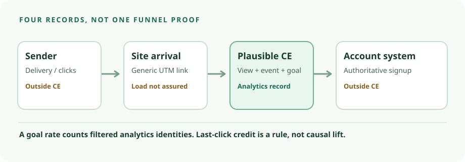

Plausible CE v3.2.1 · tagged-source audit · 9 Oct 2026
Plausible CE can report a tagged visit and a signup signal. It cannot verify the signup.
For a fictional newsletter link, the v3.2.1 tracker can send a pageview with the URL, and the tagged ingestion path extracts UTM fields. A site can separately emit signup-confirmed after its server reports success, then use a configured goal to report a conversion rate. That is post-click analytics, not proof of email delivery, a database account or campaign lift. This is a tagged-source and first-party-documentation audit, not a running CE installation or browser test.

One fictional link, five evidence edges
Use https://example.test/library?utm_source=newsletter&utm_medium=email&utm_campaign=october-library. It has generic tags and no recipient token. example.test is not a live site; no message, account or event was created in this audit.
- Sender → site: the sender owns delivery evidence.Plausible's campaign guide recommends UTM tagging email links. Plausible's on-site code cannot inspect whether a message was sent, delivered or clicked by a particular recipient. A click can fail to load the site.
- Loaded page → pageview request: possible, not guaranteed.The tagged tracker enables autocapture; autocapture calls
track('pageview'); track.js sends the current URL and referrer. The install guide describes the site-specific script. Redirects, consent controls, blockers and network failure can prevent a record. No CE v3.2.1 browser path was tested. - Request → UTM session fields: tagged-code evidence.The request parser reads the URL query; event ingestion assigns
utm_source,utm_mediumandutm_campaignto session attributes. Source classification prioritizes UTM source over referrer, and the Campaigns guide describes UTM breakdowns. This audit did not inspect the CE dashboard or exact filter behavior. - Server success → browser event → goal: an instrumented signal.The site can call
plausible('signup-confirmed')only after its own server reports a new account. Custom-event documentation requires an exact-match goal and says goals do not backfill earlier events. A button or form-submit event alone is an attempt. Even a post-success browser event can be missed or duplicated; compare with the authoritative account table. No event or goal was created here. - Goal → reported conversion: a scoped analytics rate.Metric definitions give unique goal conversions ÷ unique visitors under applied filters; total conversions can include repeat completions. The source guide describes last-click credit to the converting visit's source. Neither count is a unique email recipient, and credit is not incremental effect. No report was observed.
Read the five numbers separately
| Number | Use it for | Do not call it |
|---|---|---|
| Pageviews | Tracked page-load records within the date and filter scope. | Sender clicks or delivered messages. |
| Visitors | Plausible's analytics identity count. Its metrics guide notes that one person on different devices or days can count more than once. | People or unique recipients. |
| Event instances | Browser-side signup-confirmed signals received. | Verified account rows. |
| Unique goal conversions | Unique visitors who completed the configured goal under filters. | All event instances. |
| Conversion rate | Unique goal conversions divided by unique visitors under the same scope. | Revenue, ROI or causal lift. |
The tagged user-ID path hashes user agent, remote IP, domain and rotating salt; the salt module supports rotation. Do not join that analytics identity to an email address.
CE, Cloud and licence boundaries
The v3.2.1 application licence contains AGPLv3 terms; the tagged README calls CE AGPLv3-or-later. The tracker package and separate CE Compose repository have MIT licences. The Compose licence does not turn the application image into MIT. Outside email sending and hosting are separate.
The tagged Cloud/CE comparison lists marketing funnels, ecommerce revenue goals, SSO and sites API as outside CE; it describes CE bot filtering as basic rather than Cloud's advanced filtering, and assigns hosting, security, uptime and backups to the operator. Tagged ingestion places revenue handling behind an edition-specific on_ee branch. Living goal and event docs mention wider product features; do not treat their funnel or revenue sections as CE entitlements. This task needs only pageviews, UTM fields, ordinary custom events and goals, pending a CE dashboard test.
Deployment and patch gate
The matching CE v3.2.1 README documents Docker/Compose, SSE 4.2 or NEON CPU support and at least 2 GB RAM recommended. It instructs setting BASE_URL and a long SECRET_KEY_BASE, putting the site behind HTTPS or a reverse proxy, starting Compose and creating the first user. Its tagged Compose file uses the Plausible v3.2.1 app image, PostgreSQL 16 Alpine and ClickHouse 24.12 Alpine with persistent volumes. The package page lists the image and architecture-specific digests, but no image was pulled or verified here. For a pilot, pin a verified digest, replace sample DB credentials, protect .env, restrict dashboard/DB access and registrations, maintain TLS, and back up and restore-test both databases plus configuration and secrets. Volumes are not backups. Follow release-specific upgrade guidance.
Keep personal data out of the path
The tracker sends a full URL, referrer and optional properties to the CE endpoint. Tagged ingestion stores the pathname rather than ordinary page-query strings, selected UTM values as session fields, and a valid referrer as host and path without its query (request, event, source). The full raw URL still reaches the endpoint and may enter network or proxy logs. UTM values, path segments, event names, properties and automatic link URL properties can carry personal data. Do not put email, recipient IDs, account IDs, tokens or personalized tags there. Audit logs and link-event settings. The operator must decide notice, lawful basis or consent, retention, access, geography and deletion for its site; cookie-free marketing language is not a compliance finding.
Which path should a small team test?
| Path | Use when | Stop condition |
|---|---|---|
| Plausible CE v3.2.1 | Self-hosting control and a simple UTM/pageview/custom-goal view justify two databases, patching and restore work. | No verified digest, HTTPS, /storybook check, backup/restore or synthetic dashboard trace. |
| Self-hosted Umami v3.4.0 | A prior tagged-source audit found a Node/PostgreSQL UTM and event/goal path under an MIT repository licence, and avoiding ClickHouse or AGPL obligations is material. | Its runtime and advisory/source discrepancy are still unverified; its rates and attribution rules are not interchangeable with Plausible's. |
| Existing analytics | It already measures generic tagged arrivals and server-confirmed outcomes under an acceptable permission and data policy. | Its UTM, goal and audit trail have not been checked. Adding a service may be unnecessary. |
This is a task-specific operating decision, not a product ranking or benchmark. The newsletter sender and account database remain separate authoritative systems.
Private synthetic test card
Use an isolated v3.2.1 CE deployment, fake site and no real people. Verify the app digest and /storybook absence; restore-test PostgreSQL, ClickHouse and secrets; load the generic UTM link and inspect the request plus Campaigns rows; configure the exact-match goal before events; emit signup-confirmed after simulated server success but not failure. Compare pageviews, visitors, event instances, unique goal conversions and rate under one date/filter scope. Repeat for reload, duplicate submission, redirect, return visit, blocked script and consent denial. Compare aggregates with a synthetic account table, not a recipient list. Record expected and observed values before claiming measurement. No pinned runnable fixture was available in this run, so none of these steps was performed.